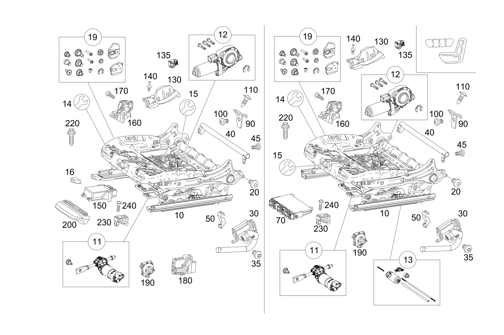

| № | Артикул | Название | Кол. | Примечание | Ограничение |
|---|---|---|---|---|---|
| 10 | A 000 910 53 03 | Механизм рег. по высоте. (HEIGHT ADJUSTMENT) | 1 | Сиденье слева | -555 |
| 10 | A 000 910 52 03 | Механизм рег. по высоте. (HEIGHT ADJUSTMENT) | 1 | Сиденье справа | -555 |
| 10 | A 000 910 81 02 | Механизм рег. по высоте. (HEIGHT ADJUSTMENT) | 1 | Сиденье слева | P65+-555 |
| 10 | A 000 910 82 02 | Механизм рег. по высоте. (HEIGHT ADJUSTMENT) | 1 | Сиденье справа | P65+-555 |
| 10 | A 000 910 87 02 | Механизм рег. по высоте. (HEIGHT ADJUSTMENT) | 1 | Сиденье слева | 221+-555 |
| 10 | A 000 910 88 02 | Механизм рег. по высоте. (HEIGHT ADJUSTMENT) | 1 | Сиденье справа | 222+-555 |
| 10 | A 000 910 89 02 | Механизм рег. по высоте. (HEIGHT ADJUSTMENT) | 1 | Сиденье слева Рулевое управление: Влево | 275+-555 |
| 10 | A 000 910 90 02 | Механизм рег. по высоте. (HEIGHT ADJUSTMENT) | 1 | Сиденье справа Рулевое управление: Вправо | 275+-555 |
| 10 | A 000 910 89 02 | Механизм рег. по высоте. (HEIGHT ADJUSTMENT) | 1 | Сиденье слева Рулевое управление: Вправо | 241+-555 |
| 10 | A 000 910 90 02 | Механизм рег. по высоте. (HEIGHT ADJUSTMENT) | 1 | Сиденье справа Рулевое управление: Влево | 242+-555 |
| 10 | A 000 910 62 03 | Механизм рег. по высоте. (HEIGHT ADJUSTMENT) | 1 | Сиденье слева | (221+(460/494))+-555 |
| 10 | A 000 910 63 03 | Механизм рег. по высоте. (HEIGHT ADJUSTMENT) | 1 | Сиденье справа | (222+(460/494))+-555 |
| 10 | A 000 910 83 03 | Механизм рег. по высоте. (HEIGHT ADJUSTMENT) | 1 | Сиденье слева Рулевое управление: Влево | (275+(460/494))+-555 |
| 10 | A 000 910 81 02 | Механизм рег. по высоте. (HEIGHT ADJUSTMENT) | 1 | Сиденье слева | 555 |
| 10 | A 000 910 82 02 | Механизм рег. по высоте. (HEIGHT ADJUSTMENT) | 1 | Сиденье справа | 555 |
| 10 | A 000 910 82 03 | Механизм рег. по высоте. (HEIGHT ADJUSTMENT) | 1 | Сиденье справа Рулевое управление: Влево | (242+(460/494))+-555 |
| 10 | A 000 910 83 03 | Механизм рег. по высоте. (HEIGHT ADJUSTMENT) | 1 | Сиденье слева Рулевое управление: Влево | 555+275+(460/494) |
| 10 | A 000 910 82 03 | Механизм рег. по высоте. (HEIGHT ADJUSTMENT) | 1 | Сиденье справа Рулевое управление: Влево | 555+275+(460/494) |
| 10 | A 000 910 89 02 | Механизм рег. по высоте. (HEIGHT ADJUSTMENT) | 1 | Сиденье слева | 555+275 |
| 10 | A 000 910 90 02 | Механизм рег. по высоте. (HEIGHT ADJUSTMENT) | 1 | Сиденье справа | 555+275 |
| 11 | A 000 910 22 09 | - К-т мех-ма рег.накл. сид. (PARTS KIT, SEAT ADJUST.) | 1 | Регулировка наклона, сиденье слева | -555+P65/-555+221/-555+241/-555+275 |
| 11 | A 000 910 23 09 | - К-т мех-ма рег.накл. сид. (PARTS KIT, SEAT ADJUST.) | 1 | Регулировка наклона, сиденье справа | -555+P65/-555+222/-555+242/-555+275 |
| 12 | A 000 910 24 09 | - К-т рег.высоты ремня (PARTS KIT, HGHT. ADJ.) | 1 | Регулировка по высоте, сиденье слева | -555 |
| 12 | A 000 910 25 09 | - К-т рег.высоты ремня (PARTS KIT, HGHT. ADJ.) | 1 | Регулировка по высоте, сиденье справа | -555 |
| 13 | A 000 910 26 09 | - К-т рег. пол. сиденья (PARTS KIT, SEAT ADJUSTM.) | 1 | Продольная регулировка, сиденье слева | -555+221/-555+241/-555+275 |
| 13 | A 000 910 26 09 | - К-т рег. пол. сиденья (PARTS KIT, SEAT ADJUSTM.) | 1 | Продольная регулировка, сиденье справа | -555+222/-555+242/-555+275 |
| 14 | A 000 910 30 09 | - К-т ковша подушки сиденья (PARTS KIT, SEAT SHELL) | 1 | Сиденье слева | -555+241/-555+275 |
| 14 | A 000 910 31 09 | - К-т ковша подушки сиденья (PARTS KIT, SEAT SHELL) | 1 | Сиденье справа | -555+242/-555+275 |
| 14 | A 000 910 28 09 | - К-т ковша подушки сиденья (PARTS KIT, SEAT SHELL) | 1 | Сиденье слева | -555+P65/-555+221 |
| 14 | A 000 910 29 09 | - К-т ковша подушки сиденья (PARTS KIT, SEAT SHELL) | 1 | Сиденье справа | -555+P65/-555+222 |
| 14 | A 000 910 32 09 | - К-т ковша подушки сиденья (PARTS KIT, SEAT SHELL) | 1 | Сиденье слева | -(555/242/275) |
| 14 | A 000 910 33 09 | - К-т ковша подушки сиденья (PARTS KIT, SEAT SHELL) | 1 | Сиденье справа | -555 |
| 15 | A 000 914 21 00 | - Пружинный каркас подушки (SUSPENSION, CUSHION) | 1 | Сиденье слева | -555 |
| 15 | A 000 914 21 00 | - Пружинный каркас подушки (SUSPENSION, CUSHION) | 1 | Сиденье справа | -555 |
| 16 | A 000 919 09 00 | - Ручка (GRAB HANDLE) | 1 | Продольная регулировка, сиденье слева | -555 |
| 16 | A 000 919 10 00 | - Ручка (GRAB HANDLE) | 1 | Продольная регулировка, сиденье справа | -555 |
| 19 | A 002 990 04 99 | - Крепежные детали (FASTENING PARTS) | 1 | Механизм регулировки сиденья слева | -555 |
| 19 | A 002 990 04 99 | - Крепежные детали (FASTENING PARTS) | 1 | Механизм регулировки сиденья справа | -555 |
| 20 | N 000000 002213 | Винт с 6-гр. глвк (HEXALOBULAR SCREW) | 4 | Рама спинки к каркасу сиденья слева | -555 |
| 20 | N 000000 002213 | Винт с 6-гр. глвк (HEXALOBULAR SCREW) | 4 | Рама спинки к каркасу сиденья справа | -555 |
| 20 | N 000000 002213 | Винт с 6-гр. глвк (HEXALOBULAR SCREW) | 4 | Рама спинки к каркасу сиденья слева | 555 |
| 20 | N 000000 002213 | Винт с 6-гр. глвк (HEXALOBULAR SCREW) | 4 | Рама спинки к каркасу сиденья справа | 555 |
| 30 | A 205 860 01 84 | Авар. натяжитель ремня (SEAT BELT TENSIONER) | 1 | Сиденье слева | (494/460)+-555 |
| 30 | A 205 860 55 02 | Авар. натяжитель ремня (SEAT BELT TENSIONER) | 1 | Сиденье слева | (494/460)+-555 |
| 30 | A 205 860 02 84 | Авар. натяжитель ремня (SEAT BELT TENSIONER) | 1 | Сиденье справа | (494/460)+-555 |
| 30 | A 205 860 56 02 | Авар. натяжитель ремня (SEAT BELT TENSIONER) | 1 | Сиденье справа | (494/460)+-555 |
| 30 | A 205 860 01 84 | Авар. натяжитель ремня (SEAT BELT TENSIONER) | 1 | Сиденье слева | 555+(494/460) |
| 30 | A 205 860 02 84 | Авар. натяжитель ремня (SEAT BELT TENSIONER) | 1 | Сиденье справа | 555+(494/460) |
| 35 | N 000000 002213 | Винт с 6-гр. глвк (HEXALOBULAR SCREW) | 1 | Натяжитель ремня к каркасу сиденья (лев.) | 555+(494/460) |
| 35 | N 000000 002213 | Винт с 6-гр. глвк (HEXALOBULAR SCREW) | 1 | Натяжитель ремня к каркасу сиденья (прав.) | (555+(494/460))+-U10 |
| 35 | N 000000 002213 | Винт с 6-гр. глвк (HEXALOBULAR SCREW) | 1 | Натяжитель ремня к каркасу сиденья (лев.) | (494/460)+-555 |
| 35 | N 000000 002213 | Винт с 6-гр. глвк (HEXALOBULAR SCREW) | 1 | Натяжитель ремня к каркасу сиденья (прав.) | (494/460)+-555 |
| 40 | A 205 910 80 15 | Усиливающий элемент (STIFFENER) | 1 | Сиденье слева | 555 |
| 40 | A 205 910 80 15 | Усиливающий элемент (STIFFENER) | 1 | Сиденье справа | 555 |
| 45 | N 000000 001883 | Винт с 6-гр. глвк (HEXALOBULAR SCREW) | 4 | Крепление поперечной трубы левого сиденья; M5X10 | 555 |
| 45 | N 000000 001883 | Винт с 6-гр. глвк (HEXALOBULAR SCREW) | 4 | Крепление поперечной трубы правого сиденья; M5X10 | 555 |
| 50 | A 166 860 18 14 | Держатель (HOLDER) | 1 | Сиденье слева | 494/460 |
| 50 | A 166 860 18 14 | Держатель (HOLDER) | 1 | Сиденье справа | 494/460 |
| 70 | A 167 900 32 05 | Блок управления (CONTROL UNIT) | 1 | Сиденье слева Рулевое управление: Влево [672] ДЕТАЛЬ ПОСЛЕ УСТАН.ПРОВЕРИТЬ НА АКТУАЛЬНОСТЬ "ПРОШИВНОГО" ПО [697] ДЕТАЛЬ ПОСТАВЛЯЕТСЯ ТОЛЬКО/ИЛИ ТАКЖЕ КАК ЗАП.ЧАСТЬ | 221+-(806/807/808/809) |
| 70 | A 167 900 95 15 | Блок управления (CONTROL UNIT) | 1 | Сиденье слева Рулевое управление: Влево [672] ДЕТАЛЬ ПОСЛЕ УСТАН.ПРОВЕРИТЬ НА АКТУАЛЬНОСТЬ "ПРОШИВНОГО" ПО | 221+-(806/807/808/809) |
| 70 | A 213 900 30 13 | Блок управления (CONTROL UNIT) | 1 | Сиденье слева Рулевое управление: Влево [672] ДЕТАЛЬ ПОСЛЕ УСТАН.ПРОВЕРИТЬ НА АКТУАЛЬНОСТЬ "ПРОШИВНОГО" ПО [697] ДЕТАЛЬ ПОСТАВЛЯЕТСЯ ТОЛЬКО/ИЛИ ТАКЖЕ КАК ЗАП.ЧАСТЬ | 221+2B8 |
| 70 | A 167 900 33 05 | Блок управления (CONTROL UNIT) | 1 | Сиденье слева Рулевое управление: Вправо [672] ДЕТАЛЬ ПОСЛЕ УСТАН.ПРОВЕРИТЬ НА АКТУАЛЬНОСТЬ "ПРОШИВНОГО" ПО [697] ДЕТАЛЬ ПОСТАВЛЯЕТСЯ ТОЛЬКО/ИЛИ ТАКЖЕ КАК ЗАП.ЧАСТЬ | 221+-(806/807/808/809) |
| 70 | A 167 900 96 15 | Блок управления (CONTROL UNIT) | 1 | Сиденье слева Рулевое управление: Вправо [672] ДЕТАЛЬ ПОСЛЕ УСТАН.ПРОВЕРИТЬ НА АКТУАЛЬНОСТЬ "ПРОШИВНОГО" ПО | 221+-(806/807/808/809) |
| 70 | A 213 900 00 38 | Блок управления (CONTROL UNIT) | 1 | Сиденье слева Рулевое управление: Вправо | 221+2B8 |
| 70 | A 167 900 95 15 | Блок управления (CONTROL UNIT) | 1 | Сиденье слева Рулевое управление: Влево [672] ДЕТАЛЬ ПОСЛЕ УСТАН.ПРОВЕРИТЬ НА АКТУАЛЬНОСТЬ "ПРОШИВНОГО" ПО | 221 |
| 70 | A 167 900 96 15 | Блок управления (CONTROL UNIT) | 1 | Сиденье слева Рулевое управление: Вправо [672] ДЕТАЛЬ ПОСЛЕ УСТАН.ПРОВЕРИТЬ НА АКТУАЛЬНОСТЬ "ПРОШИВНОГО" ПО | 221 |
| 70 | A 205 900 55 02 | Блок управления (CONTROL UNIT) | 1 | Сиденье слева [697] ДЕТАЛЬ ПОСТАВЛЯЕТСЯ ТОЛЬКО/ИЛИ ТАКЖЕ КАК ЗАП.ЧАСТЬ | (221+(807/808/809))+-555 |
| 70 | A 167 900 32 05 | Блок управления (CONTROL UNIT) | 1 | Сиденье справа Рулевое управление: Вправо [672] ДЕТАЛЬ ПОСЛЕ УСТАН.ПРОВЕРИТЬ НА АКТУАЛЬНОСТЬ "ПРОШИВНОГО" ПО [697] ДЕТАЛЬ ПОСТАВЛЯЕТСЯ ТОЛЬКО/ИЛИ ТАКЖЕ КАК ЗАП.ЧАСТЬ | 222+-(806/807/808/809) |
| 70 | A 167 900 95 15 | Блок управления (CONTROL UNIT) | 1 | Сиденье справа Рулевое управление: Вправо [672] ДЕТАЛЬ ПОСЛЕ УСТАН.ПРОВЕРИТЬ НА АКТУАЛЬНОСТЬ "ПРОШИВНОГО" ПО | 222+-(806/807/808/809) |
| 70 | A 213 900 30 13 | Блок управления (CONTROL UNIT) | 1 | Сиденье справа Рулевое управление: Вправо [672] ДЕТАЛЬ ПОСЛЕ УСТАН.ПРОВЕРИТЬ НА АКТУАЛЬНОСТЬ "ПРОШИВНОГО" ПО [697] ДЕТАЛЬ ПОСТАВЛЯЕТСЯ ТОЛЬКО/ИЛИ ТАКЖЕ КАК ЗАП.ЧАСТЬ | 222+2B8 |
| 70 | A 167 900 33 05 | Блок управления (CONTROL UNIT) | 1 | Сиденье справа Рулевое управление: Влево [672] ДЕТАЛЬ ПОСЛЕ УСТАН.ПРОВЕРИТЬ НА АКТУАЛЬНОСТЬ "ПРОШИВНОГО" ПО [697] ДЕТАЛЬ ПОСТАВЛЯЕТСЯ ТОЛЬКО/ИЛИ ТАКЖЕ КАК ЗАП.ЧАСТЬ | 222+-(806/807/808/809) |
| 70 | A 167 900 96 15 | Блок управления (CONTROL UNIT) | 1 | Сиденье справа Рулевое управление: Влево [672] ДЕТАЛЬ ПОСЛЕ УСТАН.ПРОВЕРИТЬ НА АКТУАЛЬНОСТЬ "ПРОШИВНОГО" ПО | 222+-(806/807/808/809) |
| 70 | A 213 900 00 38 | Блок управления (CONTROL UNIT) | 1 | Сиденье справа Рулевое управление: Влево | 222+2B8 |
| 70 | A 167 900 95 15 | Блок управления (CONTROL UNIT) | 1 | Сиденье справа Рулевое управление: Вправо [672] ДЕТАЛЬ ПОСЛЕ УСТАН.ПРОВЕРИТЬ НА АКТУАЛЬНОСТЬ "ПРОШИВНОГО" ПО | 222 |
| 70 | A 167 900 96 15 | Блок управления (CONTROL UNIT) | 1 | Сиденье справа Рулевое управление: Влево [672] ДЕТАЛЬ ПОСЛЕ УСТАН.ПРОВЕРИТЬ НА АКТУАЛЬНОСТЬ "ПРОШИВНОГО" ПО | 222 |
| 70 | A 205 900 55 02 | Блок управления (CONTROL UNIT) | 1 | Сиденье справа [697] ДЕТАЛЬ ПОСТАВЛЯЕТСЯ ТОЛЬКО/ИЛИ ТАКЖЕ КАК ЗАП.ЧАСТЬ | (222+(807/808/809))+-555 |
| 70 | A 205 900 51 22 | Блок управления (CONTROL UNIT) | 1 | Сиденье слева Рулевое управление: Влево [672] ДЕТАЛЬ ПОСЛЕ УСТАН.ПРОВЕРИТЬ НА АКТУАЛЬНОСТЬ "ПРОШИВНОГО" ПО [697] ДЕТАЛЬ ПОСТАВЛЯЕТСЯ ТОЛЬКО/ИЛИ ТАКЖЕ КАК ЗАП.ЧАСТЬ | (275+(807/808/809))+-555 |
| 70 | A 205 900 77 27 | Блок управления (CONTROL UNIT) | 1 | Левое сиденье Рулевое управление: Влево [672] ДЕТАЛЬ ПОСЛЕ УСТАН.ПРОВЕРИТЬ НА АКТУАЛЬНОСТЬ "ПРОШИВНОГО" ПО [697] ДЕТАЛЬ ПОСТАВЛЯЕТСЯ ТОЛЬКО/ИЛИ ТАКЖЕ КАК ЗАП.ЧАСТЬ | 275+-555 |
| 70 | A 205 900 51 22 | Блок управления (CONTROL UNIT) | 1 | Сиденье справа Рулевое управление: Вправо [672] ДЕТАЛЬ ПОСЛЕ УСТАН.ПРОВЕРИТЬ НА АКТУАЛЬНОСТЬ "ПРОШИВНОГО" ПО [697] ДЕТАЛЬ ПОСТАВЛЯЕТСЯ ТОЛЬКО/ИЛИ ТАКЖЕ КАК ЗАП.ЧАСТЬ | (275+(807/808/809))+-555 |
| 70 | A 205 900 77 27 | Блок управления (CONTROL UNIT) | 1 | Сиденье справа Рулевое управление: Вправо [672] ДЕТАЛЬ ПОСЛЕ УСТАН.ПРОВЕРИТЬ НА АКТУАЛЬНОСТЬ "ПРОШИВНОГО" ПО [697] ДЕТАЛЬ ПОСТАВЛЯЕТСЯ ТОЛЬКО/ИЛИ ТАКЖЕ КАК ЗАП.ЧАСТЬ | 275+-555 |
| 70 | A 205 900 52 22 | Блок управления (CONTROL UNIT) | 1 | Сиденье слева Рулевое управление: Вправо [672] ДЕТАЛЬ ПОСЛЕ УСТАН.ПРОВЕРИТЬ НА АКТУАЛЬНОСТЬ "ПРОШИВНОГО" ПО [697] ДЕТАЛЬ ПОСТАВЛЯЕТСЯ ТОЛЬКО/ИЛИ ТАКЖЕ КАК ЗАП.ЧАСТЬ | (241+(807/808/809))+-555 |
| 70 | A 205 900 78 27 | Блок управления (CONTROL UNIT) | 1 | Сиденье слева Рулевое управление: Вправо [672] ДЕТАЛЬ ПОСЛЕ УСТАН.ПРОВЕРИТЬ НА АКТУАЛЬНОСТЬ "ПРОШИВНОГО" ПО [697] ДЕТАЛЬ ПОСТАВЛЯЕТСЯ ТОЛЬКО/ИЛИ ТАКЖЕ КАК ЗАП.ЧАСТЬ | 241+-555 |
| 70 | A 205 900 52 22 | Блок управления (CONTROL UNIT) | 1 | Сиденье справа Рулевое управление: Влево [672] ДЕТАЛЬ ПОСЛЕ УСТАН.ПРОВЕРИТЬ НА АКТУАЛЬНОСТЬ "ПРОШИВНОГО" ПО [697] ДЕТАЛЬ ПОСТАВЛЯЕТСЯ ТОЛЬКО/ИЛИ ТАКЖЕ КАК ЗАП.ЧАСТЬ | (242+(807/808/809))+-555 |
| 70 | A 205 900 78 27 | Блок управления (CONTROL UNIT) | 1 | Сиденье справа Рулевое управление: Влево [672] ДЕТАЛЬ ПОСЛЕ УСТАН.ПРОВЕРИТЬ НА АКТУАЛЬНОСТЬ "ПРОШИВНОГО" ПО [697] ДЕТАЛЬ ПОСТАВЛЯЕТСЯ ТОЛЬКО/ИЛИ ТАКЖЕ КАК ЗАП.ЧАСТЬ | 242+-555 |
| 70 | A 205 900 51 22 | Блок управления (CONTROL UNIT) | 1 | Сиденье слева Рулевое управление: Влево [672] ДЕТАЛЬ ПОСЛЕ УСТАН.ПРОВЕРИТЬ НА АКТУАЛЬНОСТЬ "ПРОШИВНОГО" ПО [697] ДЕТАЛЬ ПОСТАВЛЯЕТСЯ ТОЛЬКО/ИЛИ ТАКЖЕ КАК ЗАП.ЧАСТЬ | (806/807/808/809)+555+275 |
| 70 | A 205 900 77 27 | Блок управления (CONTROL UNIT) | 1 | Сиденье слева Рулевое управление: Влево [672] ДЕТАЛЬ ПОСЛЕ УСТАН.ПРОВЕРИТЬ НА АКТУАЛЬНОСТЬ "ПРОШИВНОГО" ПО [697] ДЕТАЛЬ ПОСТАВЛЯЕТСЯ ТОЛЬКО/ИЛИ ТАКЖЕ КАК ЗАП.ЧАСТЬ | 555+275+-(806/807/808/809) |
| 70 | A 205 900 51 22 | Блок управления (CONTROL UNIT) | 1 | Сиденье справа Рулевое управление: Вправо [672] ДЕТАЛЬ ПОСЛЕ УСТАН.ПРОВЕРИТЬ НА АКТУАЛЬНОСТЬ "ПРОШИВНОГО" ПО [697] ДЕТАЛЬ ПОСТАВЛЯЕТСЯ ТОЛЬКО/ИЛИ ТАКЖЕ КАК ЗАП.ЧАСТЬ | 555+275 |
| 70 | A 205 900 77 27 | Блок управления (CONTROL UNIT) | 1 | Сиденье справа Рулевое управление: Вправо [672] ДЕТАЛЬ ПОСЛЕ УСТАН.ПРОВЕРИТЬ НА АКТУАЛЬНОСТЬ "ПРОШИВНОГО" ПО [697] ДЕТАЛЬ ПОСТАВЛЯЕТСЯ ТОЛЬКО/ИЛИ ТАКЖЕ КАК ЗАП.ЧАСТЬ | 555+275 |
| 70 | A 205 900 52 22 | Блок управления (CONTROL UNIT) | 1 | Сиденье слева Рулевое управление: Вправо [672] ДЕТАЛЬ ПОСЛЕ УСТАН.ПРОВЕРИТЬ НА АКТУАЛЬНОСТЬ "ПРОШИВНОГО" ПО [697] ДЕТАЛЬ ПОСТАВЛЯЕТСЯ ТОЛЬКО/ИЛИ ТАКЖЕ КАК ЗАП.ЧАСТЬ | (806/807/808/809)+555+241 |
| 70 | A 205 900 78 27 | Блок управления (CONTROL UNIT) | 1 | Сиденье слева Рулевое управление: Вправо [672] ДЕТАЛЬ ПОСЛЕ УСТАН.ПРОВЕРИТЬ НА АКТУАЛЬНОСТЬ "ПРОШИВНОГО" ПО [697] ДЕТАЛЬ ПОСТАВЛЯЕТСЯ ТОЛЬКО/ИЛИ ТАКЖЕ КАК ЗАП.ЧАСТЬ | 555+241+-(806/807/808/809) |
| 70 | A 205 900 52 22 | Блок управления (CONTROL UNIT) | 1 | Сиденье справа Рулевое управление: Влево [672] ДЕТАЛЬ ПОСЛЕ УСТАН.ПРОВЕРИТЬ НА АКТУАЛЬНОСТЬ "ПРОШИВНОГО" ПО [697] ДЕТАЛЬ ПОСТАВЛЯЕТСЯ ТОЛЬКО/ИЛИ ТАКЖЕ КАК ЗАП.ЧАСТЬ | 555+242 |
| 70 | A 205 900 78 27 | Блок управления (CONTROL UNIT) | 1 | Сиденье справа Рулевое управление: Влево [672] ДЕТАЛЬ ПОСЛЕ УСТАН.ПРОВЕРИТЬ НА АКТУАЛЬНОСТЬ "ПРОШИВНОГО" ПО [697] ДЕТАЛЬ ПОСТАВЛЯЕТСЯ ТОЛЬКО/ИЛИ ТАКЖЕ КАК ЗАП.ЧАСТЬ | 555+242 |
| 90 | A 205 910 92 02 | Держатель (HOLDER) | 1 | Сиденье слева Рулевое управление: Вправо | U10+-555 |
| 90 | A 205 910 92 02 | Держатель (HOLDER) | 1 | Сиденье справа Рулевое управление: Влево | U10+-555 |
| 90 | A 205 910 92 02 | Держатель (HOLDER) | 1 | Сиденье слева Рулевое управление: Вправо | 555+U10 |
| 90 | A 205 910 92 02 | Держатель (HOLDER) | 1 | Сиденье справа Рулевое управление: Влево | 555+U10 |
| 100 | A 002 984 61 29 | болт (SCREW) | 1 | Сиденье слева; M5X8 Рулевое управление: Вправо | U10+-555 |
| 100 | A 002 984 61 29 | болт (SCREW) | 1 | Сиденье справа; M5X8 Рулевое управление: Влево | U10+-555 |
| 100 | A 002 984 61 29 | болт (SCREW) | 1 | Сиденье слева; M5X8 Рулевое управление: Вправо | 555+U10 |
| 100 | A 140 990 06 36 | Саморез с 6-гр. головкой (SELF-TAP. HEX. HEAD SCREW) | 1 | Сиденье слева; M5X14 Рулевое управление: Вправо | 555+U10 |
| 100 | A 002 984 61 29 | болт (SCREW) | 1 | Сиденье справа; M5X8 Рулевое управление: Влево | 555+U10 |
| 110 | A 140 990 06 36 | Саморез с 6-гр. головкой (SELF-TAP. HEX. HEAD SCREW) | 1 | Сиденье слева; M5X14 Рулевое управление: Вправо | U10+-555 |
| 110 | A 140 990 06 36 | Саморез с 6-гр. головкой (SELF-TAP. HEX. HEAD SCREW) | 1 | Сиденье справа; M5X14 Рулевое управление: Влево | U10+-555 |
| 110 | A 140 990 06 36 | Саморез с 6-гр. головкой (SELF-TAP. HEX. HEAD SCREW) | 1 | Сиденье слева; M5X14 Рулевое управление: Вправо | 555+U10 |
| 110 | A 140 990 06 36 | Саморез с 6-гр. головкой (SELF-TAP. HEX. HEAD SCREW) | 1 | Сиденье справа; M5X14 Рулевое управление: Влево | 555+U10 |
| 130 | A 205 821 35 89 | Кабелепровод (CABLE GUIDE) | 1 | Сиденье слева, изнутри | -555 |
| 130 | A 205 821 36 89 | Кабелепровод (CABLE GUIDE) | 1 | Сиденье справа, изнутри | -555 |
| 130 | A 205 821 23 89 | Кабелепровод (CABLE GUIDE) | 1 | Сиденье слева, снаружи | -555 |
| 130 | A 205 821 24 89 | Кабелепровод (CABLE GUIDE) | 1 | Сиденье справа, снаружи | -555 |
| 130 | A 205 919 63 00 | Крышка регулир. по высоте (COVER, HEIGHT ADJUSTMENT) | 1 | Сиденье слева, изнутри | 555 |
| 130 | A 205 919 64 00 | Крышка регулир. по высоте (COVER, HEIGHT ADJUSTMENT) | 1 | Сиденье справа, изнутри | 555 |
| 130 | A 205 919 61 00 | Крышка регулир. по высоте (COVER, HEIGHT ADJUSTMENT) | 1 | Сиденье слева, снаружи | 555 |
| 130 | A 205 919 62 00 | Крышка регулир. по высоте (COVER, HEIGHT ADJUSTMENT) | 1 | Сиденье справа, снаружи | 555 |
| 135 | A 000 994 22 48 | Крепеж (трубо)провода (LINE FASTENER) | 2 | Сиденье слева | 555 |
| 135 | A 000 994 22 48 | Крепеж (трубо)провода (LINE FASTENER) | 2 | Сиденье справа | 555 |
| 140 | A 000 990 54 92 | Заклепка | 2 | Крепление кабельной направляющей слева; 6 MM | -555 |
| 140 | A 000 990 54 92 | Заклепка | 2 | Крепление кабельной направляющей справа; 6 MM | -555 |
| 140 | A 000 990 54 92 | Заклепка | 2 | Крепление кабельной направляющей слева; 6 MM | 555 |
| 140 | A 000 990 54 92 | Заклепка | 2 | Крепление кабельной направляющей справа; 6 MM | 555 |
| 150 | A 205 900 46 07 | Блок управления (CONTROL UNIT) | 1 | Сиденье слева Рулевое управление: Вправо | 806+(873/401)+-(221/241/555) |
| 150 | A 222 900 27 20 | Блок управления (CONTROL UNIT) | 1 | Сиденье справа Рулевое управление: Влево [697] ДЕТАЛЬ ПОСТАВЛЯЕТСЯ ТОЛЬКО/ИЛИ ТАКЖЕ КАК ЗАП.ЧАСТЬ | 873+-(806/807/808/809) |
| 150 | A 222 900 82 21 | Блок управления (CONTROL UNIT) | 1 | Сиденье справа Рулевое управление: Влево | 873+-(806/807/808/809) |
| 150 | A 205 900 95 43 | Блок управления (CONTROL UNIT) | 1 | Сиденье справа Рулевое управление: Влево | 401+-(806/807/808/809) |
| 150 | A 205 900 41 49 | Блок управления (CONTROL UNIT) | 1 | Сиденье справа Рулевое управление: Влево | 401+-(806/807/808/809) |
| 150 | A 222 900 82 21 | Блок управления (CONTROL UNIT) | 1 | Сиденье справа Рулевое управление: Влево | 802+873 |
| 150 | A 222 900 82 21 | Блок управления (CONTROL UNIT) | 1 | Сиденье справа Рулевое управление: Влево | 873 |
| 150 | A 205 900 41 49 | Блок управления (CONTROL UNIT) | 1 | Сиденье справа Рулевое управление: Влево | 802+401 |
| 150 | A 205 900 41 49 | Блок управления (CONTROL UNIT) | 1 | Сиденье справа Рулевое управление: Влево | 401 |
| 150 | A 205 900 63 31 | Блок управления (CONTROL UNIT) | 1 | Сиденье слева Рулевое управление: Вправо [697] ДЕТАЛЬ ПОСТАВЛЯЕТСЯ ТОЛЬКО/ИЛИ ТАКЖЕ КАК ЗАП.ЧАСТЬ | (807/808/809)+(873/401)+-(221/241/555) |
| 150 | A 222 900 27 20 | Блок управления (CONTROL UNIT) | 1 | Сиденье слева Рулевое управление: Вправо [697] ДЕТАЛЬ ПОСТАВЛЯЕТСЯ ТОЛЬКО/ИЛИ ТАКЖЕ КАК ЗАП.ЧАСТЬ | 873+-(806/807/808/809/555/221/241) |
| 150 | A 222 900 82 21 | Блок управления (CONTROL UNIT) | 1 | Сиденье слева Рулевое управление: Вправо | 873+-(806/807/808/809/555/221/241) |
| 150 | A 205 900 95 43 | Блок управления (CONTROL UNIT) | 1 | Сиденье слева Рулевое управление: Вправо | 401+-(806/807/808/809/555/221/241) |
| 150 | A 205 900 41 49 | Блок управления (CONTROL UNIT) | 1 | Сиденье слева Рулевое управление: Вправо | 401+-(806/807/808/809/555/221/241) |
| 150 | A 222 900 82 21 | Блок управления (CONTROL UNIT) | 1 | Сиденье слева Рулевое управление: Вправо | 802+873 |
| 150 | A 222 900 82 21 | Блок управления (CONTROL UNIT) | 1 | Сиденье слева Рулевое управление: Вправо | 873 |
| 150 | A 205 900 41 49 | Блок управления (CONTROL UNIT) | 1 | Сиденье слева Рулевое управление: Вправо | 802+401 |
| 150 | A 205 900 41 49 | Блок управления (CONTROL UNIT) | 1 | Сиденье слева Рулевое управление: Вправо | 401 |
| 150 | A 205 900 63 31 | Блок управления (CONTROL UNIT) | 1 | Сиденье слева Рулевое управление: Вправо [697] ДЕТАЛЬ ПОСТАВЛЯЕТСЯ ТОЛЬКО/ИЛИ ТАКЖЕ КАК ЗАП.ЧАСТЬ | (555+873+(806/807/808/809))+-(221/241) |
| 150 | A 222 900 27 20 | Блок управления (CONTROL UNIT) | 1 | Сиденье слева Рулевое управление: Вправо [697] ДЕТАЛЬ ПОСТАВЛЯЕТСЯ ТОЛЬКО/ИЛИ ТАКЖЕ КАК ЗАП.ЧАСТЬ | 555+873+-(221/241/806/807/808/809) |
| 150 | A 205 900 63 31 | Блок управления (CONTROL UNIT) | 1 | Сиденье справа Рулевое управление: Влево [697] ДЕТАЛЬ ПОСТАВЛЯЕТСЯ ТОЛЬКО/ИЛИ ТАКЖЕ КАК ЗАП.ЧАСТЬ | (807/808/809)+(873/401)+-(222/242/555) |
| 150 | A 205 900 63 31 | Блок управления (CONTROL UNIT) | 1 | Сиденье справа Рулевое управление: Влево [697] ДЕТАЛЬ ПОСТАВЛЯЕТСЯ ТОЛЬКО/ИЛИ ТАКЖЕ КАК ЗАП.ЧАСТЬ | ((555+873)+(806/807/808/809))+-(222/242) |
| 150 | A 222 900 27 20 | Блок управления (CONTROL UNIT) | 1 | Сиденье справа Рулевое управление: Влево [697] ДЕТАЛЬ ПОСТАВЛЯЕТСЯ ТОЛЬКО/ИЛИ ТАКЖЕ КАК ЗАП.ЧАСТЬ | 555+873+-(222/242/806/807/808/809) |
| 160 | A 205 905 18 03 | Датчик Холла (HALL SENSOR) | 1 | Сиденье слева | (494/460)+-555 |
| 160 | A 205 905 18 03 | Датчик Холла (HALL SENSOR) | 1 | Сиденье справа | (494/460/835)+-555 |
| 160 | A 205 905 18 03 | Датчик Холла (HALL SENSOR) | 1 | Сиденье слева | 555+(494/460) |
| 160 | A 205 905 18 03 | Датчик Холла (HALL SENSOR) | 1 | Сиденье справа | 555+(494/460/835) |
| 170 | A 001 984 65 29 | Болт с головкой торкс (HEXALOBULAR BOLT) | 1 | Крепление датчика слева; 5X20 | (494/460)+-555 |
| 170 | A 001 984 65 29 | Болт с головкой торкс (HEXALOBULAR BOLT) | 1 | Крепление датчика справа; 5X20 | (494/460)+-555 |
| 170 | A 001 984 65 29 | Болт с головкой торкс (HEXALOBULAR BOLT) | 1 | Крепление датчика слева; 5X20 | 555+(494/460) |
| 170 | A 001 984 65 29 | Болт с головкой торкс (HEXALOBULAR BOLT) | 1 | Крепление датчика справа; 5X20 | 555+(494/460/835) |
| 180 | A 205 905 77 03 | Блок выключателей (SWITCH BLOCK) | 1 | Сиденье слева | -(221/275/241/555) |
| 180 | A 205 905 79 03 | Блок выключателей (SWITCH BLOCK) | 1 | Сиденье справа | -(222/275/242/555) |
| 180 | A 205 905 27 02 | Блок выключателей (SWITCH BLOCK) | 1 | Сиденье слева | P65+-(221/275/241/555) |
| 180 | A 205 905 28 02 | Блок выключателей (SWITCH BLOCK) | 1 | Сиденье справа | P65+-(222/275/242/555) |
| 180 | A 205 905 27 02 | Блок выключателей (SWITCH BLOCK) | 1 | Сиденье слева | 555+-(275/241/221) |
| 180 | A 205 905 28 02 | Блок выключателей (SWITCH BLOCK) | 1 | Сиденье справа | 555+-(275/242/222) |
| 190 | A 205 905 78 03 | Блок выключателей (SWITCH BLOCK) | 1 | Сиденье слева | P65+-(555/409) |
| 190 | A 205 905 76 03 | Блок выключателей | 1 | Сиденье справа | P65+-(555/409) |
| 190 | A 205 905 76 03 | Блок выключателей | 1 | Сиденье слева | 221+-(555/409) |
| 190 | A 205 905 78 03 | Блок выключателей (SWITCH BLOCK) | 1 | Сиденье справа | 222+-(555/409) |
| 190 | A 205 905 76 03 | Блок выключателей | 1 | Сиденье слева Рулевое управление: Влево | 275+-(555/409) |
| 190 | A 205 905 78 03 | Блок выключателей (SWITCH BLOCK) | 1 | Сиденье справа Рулевое управление: Вправо | 275+-(555/409) |
| 190 | A 205 905 76 03 | Блок выключателей | 1 | Сиденье слева Рулевое управление: Вправо | 241+-(555/409) |
| 190 | A 205 905 78 03 | Блок выключателей (SWITCH BLOCK) | 1 | Сиденье справа Рулевое управление: Влево | 242+-(555/409) |
| 190 | A 205 905 78 03 | Блок выключателей (SWITCH BLOCK) | 1 | Сиденье слева | 555 |
| 190 | A 205 905 76 03 | Блок выключателей | 1 | Сиденье справа | 555 |
| 190 | A 205 905 76 03 | Блок выключателей | 1 | Сиденье слева Рулевое управление: Влево | 555+275 |
| 190 | A 205 905 78 03 | Блок выключателей (SWITCH BLOCK) | 1 | Сиденье справа Рулевое управление: Влево | 555+242 |
| 190 | A 205 905 76 03 | Блок выключателей | 1 | Сиденье слева Рулевое управление: Вправо | 555+241 |
| 190 | A 205 905 78 03 | Блок выключателей (SWITCH BLOCK) | 1 | Сиденье справа Рулевое управление: Вправо | 555+275 |
| 200 | A 205 919 51 00 | Рычаг регулир. по высоте (LEVER, HEIGHT ADJUSTMENT) | 1 | Регулировка по высоте, слева | (P65/221)+-555 |
| 200 | A 205 919 51 00 | Рычаг регулир. по высоте (LEVER, HEIGHT ADJUSTMENT) | 1 | Регулировка по высоте, справа | (P65/222)+-555 |
| 200 | A 205 919 51 00 | Рычаг регулир. по высоте (LEVER, HEIGHT ADJUSTMENT) | 1 | Регулировка по высоте, слева | 555+-(275/241) |
| 200 | A 205 919 51 00 | Рычаг регулир. по высоте (LEVER, HEIGHT ADJUSTMENT) | 1 | Регулировка по высоте, справа | 555+-(555+(275/242)) |
| 220 | A 202 990 01 22 | Самонарезающий винт (SELF-TAPPING SCREW) | 4 | Механизм регулировки сиденья к полу, слева; M10X28 | |
| 220 | A 000 990 21 27 | Самонарезающий винт (SELF-TAPPING SCREW) | 4 | Механизм регулировки сиденья к полу, слева; M10X28 | |
| 220 | A 202 990 01 22 | Самонарезающий винт (SELF-TAPPING SCREW) | 4 | Механизм регулировки сиденья к полу, справа; M10X28 | |
| 220 | A 202 990 01 22 | Самонарезающий винт (SELF-TAPPING SCREW) | 4 | Механизм регулировки сиденья к полу, слева; M10X28 | 555 |
| 220 | A 202 990 01 22 | Самонарезающий винт (SELF-TAPPING SCREW) | 4 | Механизм регулировки сиденья к полу, справа; M10X28 | 555 |
| 220 | A 000 990 21 27 | Самонарезающий винт (SELF-TAPPING SCREW) | 4 | Механизм регулировки сиденья к полу, справа; M10X28 | |
| 230 | A 253 919 13 00 | Ограничитель хода (TRAVEL LIMITER) | 2 | К механизму регулировки положения сиденья спереди, сиденье слева Рулевое управление: Влево | -(494/460) |
| 230 | A 253 919 13 00 | Ограничитель хода (TRAVEL LIMITER) | 2 | К механизму регулировки положения сиденья спереди, сиденье справа Рулевое управление: Вправо | |
| 230 | A 253 919 15 00 | Ограничитель хода (TRAVEL LIMITER) | 2 | К механизму регулировки положения сиденья спереди, сиденье слева Рулевое управление: Влево | (221/275)+-(494/460) |
| 230 | A 253 919 15 00 | Ограничитель хода (TRAVEL LIMITER) | 2 | К механизму регулировки положения сиденья спереди, сиденье справа Рулевое управление: Вправо | 222/275 |
| 230 | A 253 919 15 00 | Ограничитель хода (TRAVEL LIMITER) | 2 | К механизму регулировки положения сиденья спереди, сиденье справа Рулевое управление: Влево | (494/460/835)+(222/242) |
| 240 | A 001 984 65 29 | Болт с головкой торкс (HEXALOBULAR BOLT) | 2 | Крепление упора; 5X20 Рулевое управление: Влево | -(221/275) |
| 240 | A 001 984 65 29 | Болт с головкой торкс (HEXALOBULAR BOLT) | 2 | Крепление упора; 5X20 Рулевое управление: Вправо | -(222/275) |
Позиций: 187 · подписано на схемах: 187 · колесо — плавный зум в курсор, перетаскивание — пан, двойной клик — зум, клик по артикулу — скопировать · наведите на строку или цифру на схеме — подсветка связки, клик — закрепить.